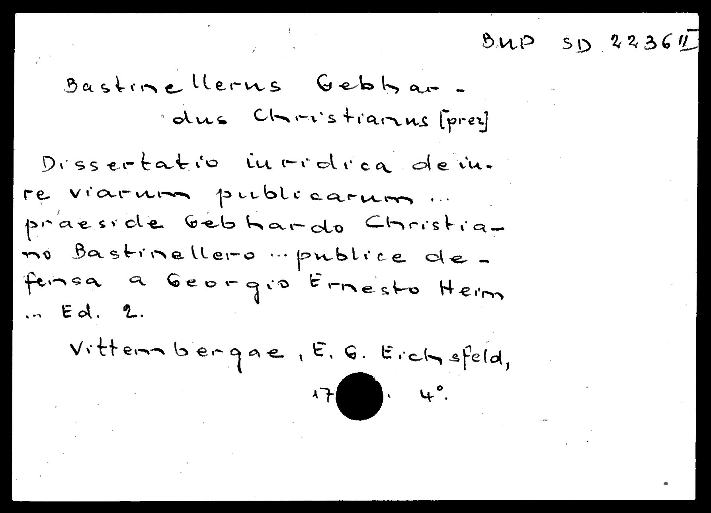
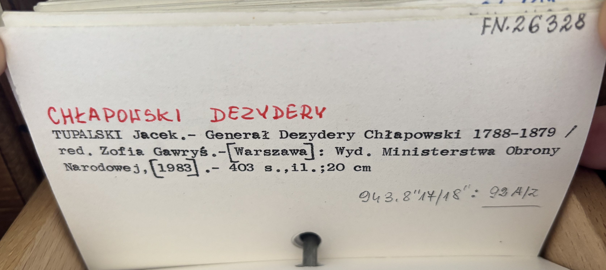

Retrokonwersja
Skany kart katalogowych (rękopiśmiennych, maszynowych i drukowanych) i rekordy bibliograficzne wyekstrahowane z nich otwartymi modelami (NuExtract3, dotrenowanym na kartach z Polony).

Druki obce XVI–XVIII wieku, karty z serwisu Polona

Karty z katalogu IBPP, fotografowane telefonem